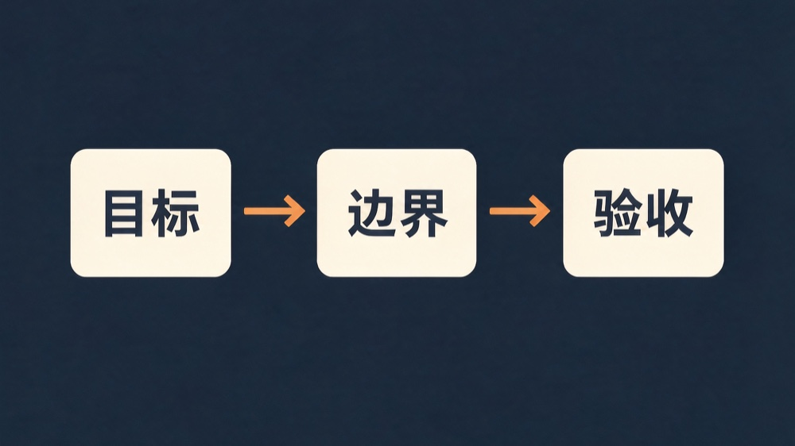

带AI之后，我重新理解了带团队
本文要点
一次评审会让作者意识到：每个人都在认真做自己的部分，每份方案单独看也都成立，可放在一起就是跑不起来。后来同时指挥几个 AI，同样的失效重演了——执行的人越多，目标模糊制造的返工就越多。文章给出三条具体做法，也指出带 AI 与带团队最关键的差别。
- 先对齐目标再分任务，尤其要说清「什么暂时不做」
- 边界不是限制，是减少返工的成本：「你看着办」是要有人付账的
- 说不出怎么验收，往往说明还没想清楚自己要什么
- 结论句：把执行交出去，不等于把责任也交出去
评审会上，一份方案被投到屏幕上。
「这版挺完整的。」有人说。
「是太完整了。」另一个同事接了一句，「我们现在要先把链路跑通，不是把后面的能力也一次装进来。」
会议室安静了几秒。
负责业务的人关心流程能不能闭环，负责技术的人关心系统能不能扩展，负责数据的人关心以后还能不能接住。每个人说得都有道理，每份方案单独看也都成立。
可放在一起，就是跑不起来。
我听着听着才发现，大家都在回答「怎样把自己的部分做好」，却没有先回答「我们现在要一起完成什么」。
后来，我开始同时让AI处理几件事。
任务分得很快，结果也交得很快。一份比一份完整，一份比一份漂亮。但只要我没有先说清楚目标，它们就会各自找一个合理的方向，认真走下去。
那种熟悉的感觉又回来了。
原来带AI和带团队，都会遇到同一个问题：执行的人越多，目标模糊制造的返工就越多。
一、先对齐目标，再分任务
以前交代任务，我也会说：把这个方案优化一下。
这句话听起来很省事，其实把很多问题留给了别人。为什么优化？给谁看？现在最需要解决什么？哪些内容先不做？
有经验的同事会追问，或者凭对我的了解补一个判断。AI也可能补，只是它补出来的方向，不一定是我想要的。
现在我会把三句话放在任务前面：为什么做，给谁用，什么暂时不做。
尤其是「什么暂时不做」。
一份方案写得很完整，不一定是好事。有时它恰恰说明，大家还没有一起做减法。
二、边界不是限制，是少返工
带团队时，边界模糊，有人会来问一句：这个要不要动？
AI也会问，但更多时候，它会先根据自己的理解往下走。补全流程、调整结构、扩展功能，它都能做。
可能做，不等于应该做。
所以我现在会把边界写成三句话：你可以决定什么；遇到什么必须回来确认；什么不许碰。
这三句话听起来有点像管理文档，没有「你看着办」那么洒脱。
但「你看着办」是有成本的。过去这个成本由同事的默契承担，现在则可能由AI生成的一堆返工承担。
三、验收不能只是「感觉差点意思」
方案交回来，我也说过：感觉还差点意思。
对方问差在哪里，我却说不上来。
于是人继续改，AI继续生成，版本越来越多。每一版都像是在努力，但没有人知道哪一版更接近目标。
后来我才明白，如果你说不出怎么验收，很可能你还没想清楚自己要什么。
现在动手前，我会先写验收：这条流程能不能跑通？不同模块能不能接上？读者能不能看懂？这次要解决的问题，有什么结果可以确认？
标准不一定完美，至少大家知道往哪里改。

四、但AI不会替你承担责任
带AI和带团队，也有最不像的地方。
团队成员会犹豫，会反对，会因为责任心主动补位。AI可以模拟讨论，却不真正承担结果。
你可以让它列风险，让它检查方案，让它给出反对意见。但最后决定做不做、承担什么后果，仍然是人的事。
把执行交出去，不等于把责任也交出去。
我在团队里负责架构编排。过去我以为自己最重要的是协调进度，现在越来越多时间花在三件更前面的事：共同目标、任务之间的边界、最后的验收口径。
这些事看起来不如推进度具体，却决定了后面是真正并行，还是各自努力之后一起返工。
带AI之后，我反而更理解团队了。
那些我以为不用讲的东西，不是大家天然知道，而是很多人用经验、默契和责任心，替我补过。
现在再看到一份特别完整的方案，我会多问一句：哪些内容，是我们这个阶段决定不做的？
你用AI时，也遇到过「每一步都对，合起来不对」吗？